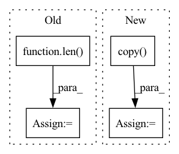

Pattern ID :33326
Before Change
wandb.log({"train/loss": loss.item()})
if (i+1) % args.sample_freq == 0:
model.eval()
dec = decoder.generate(torch.LongTensor([args.bos_token]*len( encoded[:args.test_samples]) )[:, None].to(device), args.max_seq_len,
eos_token=args.pad_token, context=encoded.detach()[:args.test_samples])
pred = token2str(dec[:args.test_samples], dataloader.tokenizer)
truth = token2str(seq["input_ids"], dataloader.tokenizer)
if args.wandb:
table = wandb.Table(columns=["Truth", "Prediction"])After Change
dataloader = Im2LatexDataset().load(args.data)
dataloader.update(**args)
valdataloader = Im2LatexDataset().load(args.valdata)
valargs = args.copy()
valargs.update(batchsize=args.testbatchsize, keep_smaller_batches=True)
valdataloader.update(**valargs)
device = args.device
In pattern: SUPERPATTERN
Frequency: 3
Non-data size: 4
Instances Fragment ID: 96046089
Project Name: lukas-blecher/latex-ocr
Commit Name: d52e43388fd9c01f33b5e03bcccbba0a0c8e51b5
Time: 2021-02-15
Author: luk.blecher@gmx.de
File Name: train.py
M Class Name: AnonimousClass
N Class Name: AnonimousClass
M Method Name: train(1)
N Method Name: train(1)
M Parent Class:
N Parent Class:
M File Name: train.py
N File Name: train.py
M Start Line: 21
M End Line: 61
N Start Line: 24
N End Line: 54
Before Change
cfg.model.roi_head.bbox_head.num_classes = len(model_classes)
else:
// For other architectures (including SSD)
cfg.model.bbox_head.num_classes = len( model_classes)
return org_model_classes, model_classes, data_classes
def configure_task_data_pipeline(self, cfg, model_classes, data_classes):After Change
// Model classes
if task_adapt_op == "REPLACE":
if len(data_classes) == 0:
model_classes = org_model_classes.copy()
else:
model_classes = data_classes.copy()
elif task_adapt_op == "MERGE":
model_classes = org_model_classes + [cls for cls in data_classes if cls not in org_model_classes] Fragment ID: 96046123
Project Name: openvinotoolkit/model_preparation_algorithm
Commit Name: c2e826fe05cfd71d0ee478444e4836180ac63105
Time: 2022-06-29
Author: harim.kang@intel.com
File Name: mpa/det/stage.py
M Class Name: DetectionStage
N Class Name: DetectionStage
M Method Name: configure_task_classes(4)
N Method Name: configure_task_classes(4)
M Parent Class: Stage
N Parent Class: Stage
M File Name: mpa/det/stage.py
N File Name: mpa/det/stage.py
M Start Line: 167
M End Line: 189
N Start Line: 149
N End Line: 189
Before Change
if context.with_display:
n_samples = label.groupby(label).count()
else:
n_samples = dict(zip(classes, [None] * len( classes) ))
for scorer in scorers:
scorer_value = scorer(model, dataset)
if isinstance(scorer_value, Number):After Change
if context.with_display:
label = cast(pd.Series, dataset.label_col)
n_samples = label.groupby(label).count()
display_df = results_df.copy()
display_df["Number of samples"] = display_df["Class"].apply(n_samples.get)
display = [display_df]
return CheckResult(results_df, header="Single Dataset Performance", display=display) Fragment ID: 96046106
Project Name: deepchecks/deepchecks
Commit Name: 0450488b486ef22abc8cefa9a020f6b00f13f57b
Time: 2022-10-23
Author: matan@deepchecks.com
File Name: deepchecks/tabular/checks/model_evaluation/single_dataset_performance.py
M Class Name: SingleDatasetPerformance
N Class Name: SingleDatasetPerformance
M Method Name: run_logic(3)
N Method Name: run_logic(3)
M Parent Class: SingleDatasetCheck,ReduceMetricClassMixin
N Parent Class: SingleDatasetCheck,ReduceMetricClassMixin
M File Name: deepchecks/tabular/checks/model_evaluation/single_dataset_performance.py
N File Name: deepchecks/tabular/checks/model_evaluation/single_dataset_performance.py
M Start Line: 65
M End Line: 86
N Start Line: 61
N End Line: 92